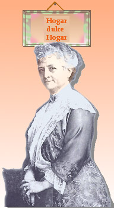

Creación Musical Femenina
El Diario de Caracas
3-12-1999
Ser compositor del arte musical en nuestra sociedad actual es una demencia vivencial. Por ésto la persona que
decida hacerlo debe tener algo importante que decir con sus sonidos. Ser mujer compositora, aún más difícil, es
una profesión creciente en Venezuela y un reto atractivo para una generación de profesionales en este arte que
conducen el relevo.

Para concretarse en hechos artísticos, las
Musas
claman por una sensibilidad, capacidad organizativa y sinceridad
que se
adjudicaría más a la versión
femenina
del humano que al peleón, brutal sexo masculino. Pero no
ha sido
así: La historia de la
música nos ofrece pocos ejemplos de mujeres
creadoras,
por el carácter misógino del arte occidental. Se
afirma,
por el lado de los
machos, que las mujeres tienen la cabeza muy atada
a
la tierra, acostumbradas al cálculo de la supervivencia
diaria
no
sólo de sí
mismas sino de sus hijos, que no les permite crear
con
imaginación. Este role impuesto por su pareja masculina
ha sido
básicamente un aprovechamiento y
explotación
servicial para darse espacio y poder deambular en su
fantasía
desenfrenada.
Por
otro lado, la educación social que reciben
las
mujeres en nuestra sociedad les otorga más libertad y
posibilidad
de acercamiento a
la condición mental exigida por el arte,
contraria
al comportamiento inducido en los hombres que crecen con el
garrote
pegado
en
la mano. El cuento se repite con talentos
femeninos
cuyas
carreras deslumbrantes se frenan en seco apenas pisan las
puertas
del
matrimonio.
Ana Magdalena Bach, segunda esposa del gran Juan
Sebastián,
además de cuidar su muchachera recopiló un
exquisito
álbum
de
piezas sencillas para el piano que todo aprendiz
felizmente
le dedica sus primeros esfuerzos. No se sabe si las compuso o si
transcribió unas piezas de juego familiar
tradicionales
en la gran familia Bach. Pocos compositores se han dedicado a
los
niños,
ya sea porque su arte requiere del más
exigente
dominio técnico instrumental, o a causa de que componer
música
sencilla de alto
nivel es quizás el reto más
difícil
para cualquier creador.
Se sospecha que Alma Mahler, esposa del
neurótico
Gustav, componía en secreto desdichada por el torbellino
del
gran
director y
compositor posromántico. La familia de
Gustav
Mahler fue siempre acechada por la muerte: De doce
hermanos, seis
mueren al
nacer, uno fue el loco del pueblo y otro se
mató
de joven. Escribe su ciclo de canciones sobre niños
muertos
Kindertotenlieder
en
1902-4 y en 1907 se muere su hija mayor.
Alma
escapa
hacia los brazos del arquitecto del Bauhaus Walter Gropius,
Mahler
busca razón infructuosamente con Sigmund
Freud,
y por último la muerte alcanza a la hija de Alma y
Gropius. Las
esposas de los
grandes nunca reciben ni parte de los
créditos
por su sacrificio y dedicación, que sin ello no hubiera
sido
posible
la producción de
los eternos logros. Permanecen detrás, de
brazos
cruzados y cabizbajas, tapando en silencio abnegado la
llamita
creativa
que
trataba respirar.
Componer es un oficio varonil para el resto del
mundo.
En Venezuela, país de sorpresas, es otra la historia. De
los 91
compositores venezolanos vivientes, 15 son
mujeres, es
decir, el 16%. Siete de éstas tienen la mejor
acreditación
académica, con
maestría y doctorado, contrario a seis de
los
varones con el mismo nivel académico. La historia de las
creadoras
femeninas arranca
con broche de oro con la virtuosa del piano y
compositora
Teresa Carreño (1853-1917) de fama internacional.
Luego
nacidas
en
la primera década del Siglo XX tenemos a
las
compositoras
Isabel Aretz (1909, Argentina), María Luisa Escobar
(1912-1985),
Blanca Estrella de Méscoli (1913-1987) y
Ana
Mercedes
Azuaje de Rugeles (1914). De la generación de los
años
veinte,
encontramos a Flor Roffé de Estévez
(1921),
Nelly Mele Lara (1922-1993) y Modesta Bor (1926-1998). En las
décadas
treinta y
cuarenta nacen Nazyl Báez Finol (1932),
Alecia
Castillo (1940), Mabel Mambretti (1942, Argentina) y Alba
Quintanilla
(1944).
La generación próxima es la que
hace
la
gran diferencia: Beatriz Bilbao (1951), Josefina Benedetti
(1953),
Mercedes
Otero
(1953), Marianela Machado (1954), Adina Izarra
(1959),
María Luisa Arencibia (1959) , María Antonia
Palacios
(1960)
y Diana
Arismendi (1962). Todas profesionales de
éxito
y preparación, orgullosas partícipes de familia y
con las
riendas del país en sus
manos. Vamos a conocerlas en los próximos
artículos
antes del cierre del milenio.
Si desea leer los artículos anteriores, visite el web indicado.